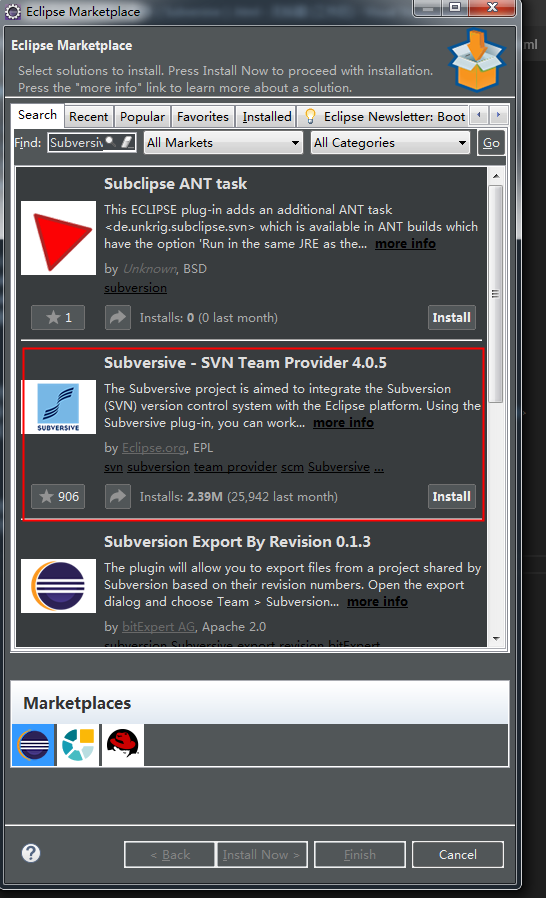
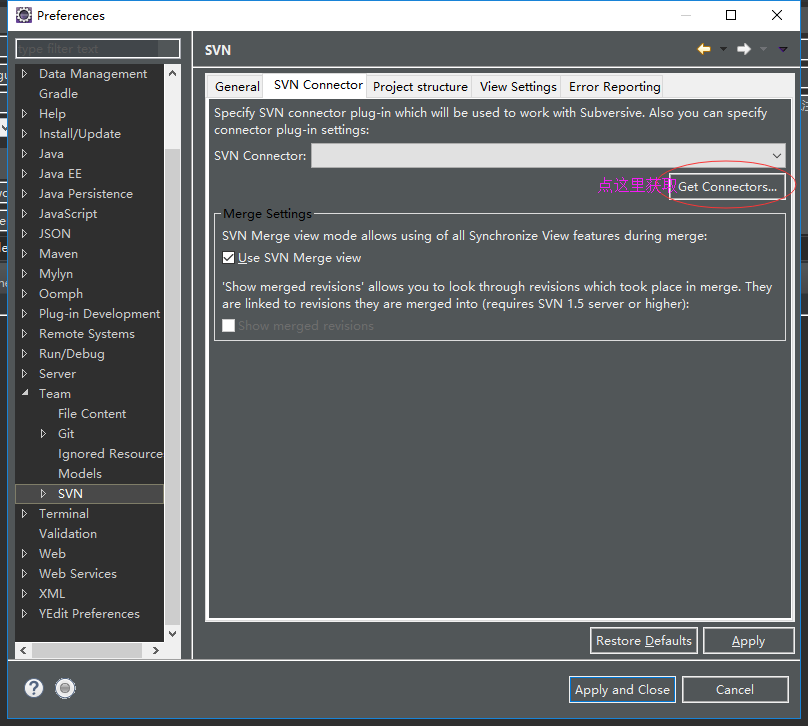

Eclipse的svn插件主流有两种：Subversive和Subclipse
Subversive是Eclipse团队开发的svn插件
Subclipse是SVN团队开发的svn插件
相比较而言Subversive比Subclipse兼容性更好，用起来更舒服一些
安装Subversive插件
第一步：打开Eclipse的应用市场，依次点击Help-》Eclipse Marketplace...
第二步：在Eclipse应用市场中搜索Subversive进行安装

安装svn连接器
只安装Subversive插件还不行，还需要安装svn连接器才能够连上svn
依次打开Window->Preferences->Team->SVN


安装Subversive插件后有两个地方发生变化
第一个地方：eclipse中的Window->Preferences->Team->SVN会多出SVN选项，同时eclipse中会多出svn视图
第二个地方：在C:\Users\登录用户名\AppData\Roaming目录下会多出subversion目录